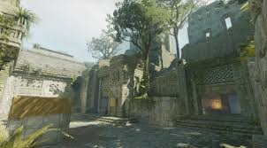

Principales
Mirage
Mapa clásico, ideal para estrategias y control del medio. Muy balanceado, y uno de los clasicos

Inferno
Mapa con calles estrechas, mucha utilidad. Control de banana es clave y jugar en equipo

Nuke
Mapa vertical, con dos plantas. Dominar exteriores es vital para avanzar y poder llevarse la victoria

Anubis
Mapa con estética egipcia. Flujo dinámico, con enfrentamientos intensos y las utilidades facilitan la victoria

Ancient
Mapa con zonas cerradas,oscuras y boscosas. Granadas bien usadas hacen la diferencia.
Dust 2
Mapa clasico del jugo desde los principios, la estrategia en este mapa te lleva a la victoria